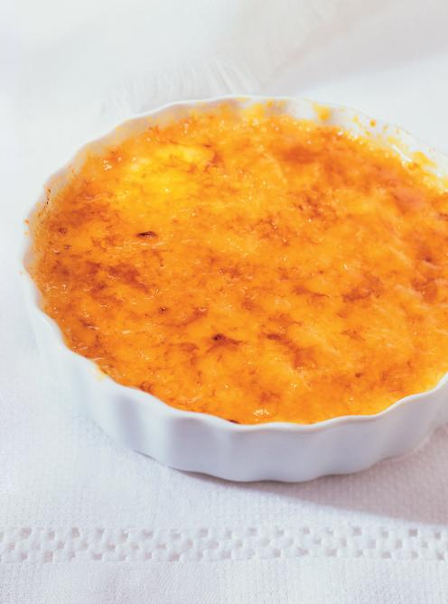

Crème brûlée
Ingrédients
- 560 ml (2 1/4 tasses) de crème 35 %
- 1 gousse de vanille, fendue en deux et grattée ou 5 ml (1 c. à thé) d'extrait de vanille
- 5 jaunes d'oeufs
- 55 g (1/4 tasse) de sucre, et plus pour caraméliser
Préparation
- Placer la grille au centre du four. Préchauffer le four à 165 ºC (325 ºF). Déposer 4 plats à crème brûlée ou des ramequins d'une contenance de 180 ml (3/4 tasse) dans un plat de cuisson.
- Dans une casserole à feu moyen, chauffer la crème 5 minutes avec la gousse de vanille sans faire bouillir.
- Dans un bol, fouetter les jaunes d'oeufs avec le sucre. Ajouter la crème chaude en remuant au fouet. Verser la préparation dans les plats. Verser de l'eau chaude dans le plat de cuisson jusqu'au 3/4 de la hauteur des plats.
- Cuire au four 40 minutes. Retirer les ramequins du plat de cuisson. Laisser tiédir, couvrir et réfrigérer 4 heures ou jusqu’à refroidissement complet.
- Saupoudrer les crèmes de sucre et caraméliser à l’aide d'un fer à crème brûlée ou d’une petite torche de cuisine. On pourrait aussi caraméliser les crèmes sous le gril (broil) du four. Servir aussitôt.

Filet de saumon
Ingrédients
- 1 filet de saumon entier, sans peau (env. 1 kg ou 2 lb)
- Le zeste de 2 citrons
- Huile d'olive
- Sel et poivre
Préparation
- Préchauffer le four à 200 ºC (400 ºF).
- Dans un plat allant au four, déposer le filet de saumon. Badigeonner d'huile d'olive et assaisonner avec le sel, le poivre et le zeste de citron.
- Cuire au four pendant 12 à 15 minutes, ou jusqu'à ce que le saumon soit cuit à votre goût.